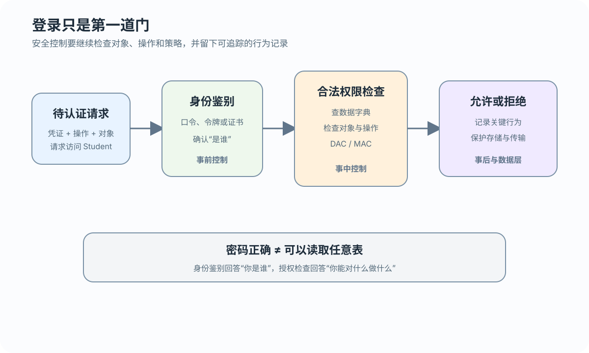
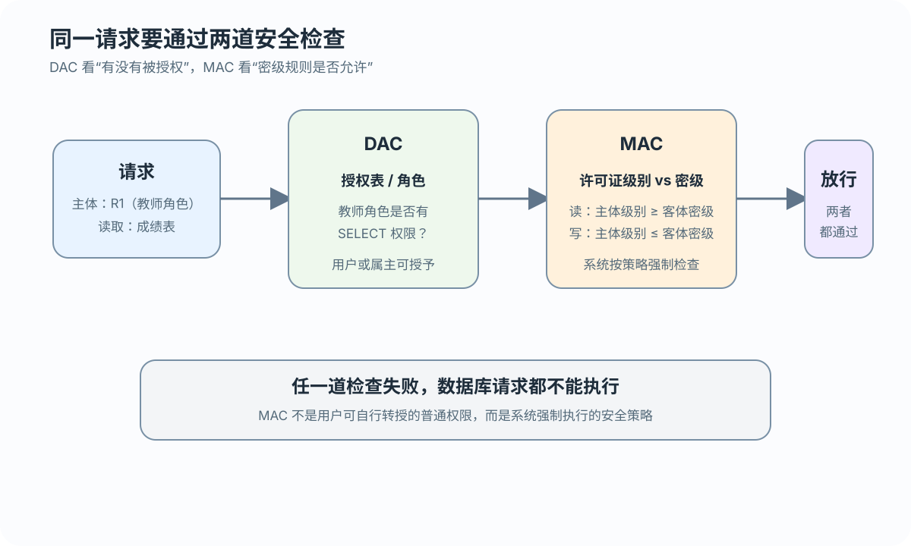

请求刚到
验证账号，并识别连续失败或异常来源

检查谁在访问哪张表、要做什么，以及这项权限从哪里来
 VER. 2608
Built with impress.js
VER. 2608
Built with impress.js
说明 DBMS 为何允许或拒绝访问，以及权限回收会影响谁
数据出错可能因账号越权、分数不合法、备份盘被偷，或输入改写了 SQL
| 看到的情况 | 首先要问 | 主要由哪一层处理 |
|---|---|---|
| 未授权账户读到了成绩 | 谁能对哪个对象做什么 | 数据库安全性 |
| 合法教师写入了 130 分 | 写入的分数是否符合业务规则 | 数据库完整性 |
| 备份盘或主机被未授权读取 | 谁能接触主机或备份，是否有权读取 | 运行环境安全 |
| 输入改变了 SQL 结构 | 输入如何进入 SQL | 应用层风险 |
TCSEC/TDI 规定安全保护要求，CC EAL 表示评估严格程度；等级不能直接对应
| 标准或等级 | 重点 | 课堂理解 |
|---|---|---|
| TCSEC/TDI D | 最小保护 | 低于更高等级要求 |
| C1 | 自主保护、DAC | 按对象和用户配置权限 |
| C2 | 受控存取、审计 | 记录到个人，便于查明谁做了什么 |
| B1、B2、B3 | 标记、结构化、安全域 | 引入强制策略 |
| A1 | 验证设计 | 形式化验证设计与实现 |
| CC EAL1—EAL7 | 评估保证 | 说明评估和保证程度 |
登录通过不等于可以读取任意对象
验证账号，并识别连续失败或异常来源
检查哪个账号要对哪个对象执行什么，以及权限从哪里来
审计记录谁在何时被放行或拒绝，但不替代前面的判断
对存储和传输中的数据加密，并限制谁能读取
账户 T17 请求 UPDATE SC.Grade：先验证身份，再检查授权路径

口令、动态因子、证书或硬件载体证明请求者身份
入侵检测查连续登录失败、异常来源与访问频率；未发现异常也须检查对象权限
身份确认后，仍查谁授权 T17 修改 SC.Grade、授权是否有效
放行与拒绝都可记入审计；审计不能替代访问前的授权判断
DBMS 查数据字典判断对象操作权限；表或列授权不能直接限制可见行
| 对象 | 操作示例 | 业务含义 |
|---|---|---|
| 数据库／模式 | CREATE | 创建对象（依产品） |
| 表或视图 | SELECT、INSERT、UPDATE、DELETE、ALL PRIVILEGES | 访问或修改数据 |
| 属性列 | SELECT、INSERT、UPDATE、REFERENCES | 指定哪些列可以被读取、修改或引用 |
| 模式对象 | CREATE TABLE／VIEW／INDEX、ALTER TABLE | 创建或调整对象 |
一条 GRANT 同时确定权限、对象和接收者
U1、U4 是课堂账号；实际账户写法按目标 DBMS 手册确定
01
02GRANT SELECT ON TABLE Student TO U1;
GRANT UPDATE(Smajor), SELECT ON TABLE Student TO U4;这里的 SELECT 允许查询整张表，UPDATE(Smajor) 只允许修改专业列；若只准访问某些行，还要用视图或按用户身份筛选。写入的数据仍须满足完整性约束
沿 U5→U6→U7 查授权来源，再判断回收 U5 的影响和其他独立授权
01
02
03
04
05
06
07
08-- DBA → U5
GRANT INSERT ON TABLE SC TO U5 WITH GRANT OPTION;
-- U5 → U6
GRANT INSERT ON TABLE SC TO U6 WITH GRANT OPTION;
-- U6 → U7
GRANT INSERT ON TABLE SC TO U7;
-- 收回 U5 传播出的权限
REVOKE INSERT ON TABLE SC FROM U5 CASCADE;用户获得对象权限时，只有附带 WITH GRANT OPTION 才能再授给别人；收回权限的语法要查所用 DBMS。若用户还从别处获得同一权限，就可能继续保有它
先授岗位权限给角色，再授角色给任职者；账号与角色激活规则须查 DBMS
01
02
03
04CREATE ROLE R1;
GRANT SELECT, UPDATE, INSERT ON TABLE Student TO R1;
GRANT R1 TO 王平, 张明, 赵玲 WITH ADMIN OPTION;
REVOKE R1 FROM 王平;WITH GRANT OPTION 允许把对象权限再授给别人，WITH ADMIN OPTION 允许管理角色的授予和回收；角色如何激活要查所用 DBMS
对象所有者或持有转授权资格的人，可以允许别人对指定对象执行某种操作
DBA、对象属主，或拥有该权限及 WITH GRANT OPTION 的用户可以作出授权决定
决定用户对对象可以执行哪些具体操作
权限可能沿转授权继续传播，也可能授给了不该获得的人
DAC 检查用户是否有权执行操作，完整性检查判断数据是否符合规则；若系统同时采用 MAC，通过 DAC 后还必须满足密级规则
即使某人拿到了普通授权，只要读写不满足密级规则，系统仍会拒绝

| 概念 | 含义 | 例子 |
|---|---|---|
| 主体 | 发起访问 | 用户或进程 |
| 客体 | 被访问 | 表、视图或文件 |
| 密级标记 | 主体许可证／客体密级 | 主体 S 级／客体 C 级 |
系统按密级强制执行 MAC，用户不能用普通 GRANT 绕过它；系统比较主体许可证级别与客体密级，判断能否读写
设密级顺序为 TS >= S >= C >= P
| 规则 | 条件 | 结果 |
|---|---|---|
| 读取 | 主体许可证级别 ≥ 客体密级 | 才允许读取 |
| 写入 | 主体许可证级别 ≤ 客体密级 | 才允许写入 |
| 双重检查 | DAC 与 MAC 都通过 | 才允许访问 |
沿用 MAC 读写规则，下表均以 DAC 检查通过为前提
| 主体许可证 | 客体密级 | 读取 | 写入 |
|---|---|---|---|
| S | C | 允许 | 拒绝 |
| C | S | 拒绝 | 允许 |
| S | S | 允许 | 允许 |
S 级主体读取 C 级对象后，可能带着 S 级信息；禁止它再写入 C 级对象，是为了避免高密级内容向下流动。上表仍以 DAC 通过为前提；不能用普通 MySQL GRANT 来演示这里的 MAC 密级规则
先写主体、操作、对象和授权来源，再判结果；审计另记时间、账号和结果
学生已登录但请求整表 SELECT：检查该学生是否有查询权限，以及是否需要限制为只看自己的记录；登录成功本身不足以放行
T17 请求 UPDATE SC.Grade：检查有效角色、列级权限和数据完整性；三者回答不同问题
U5 的授权被回收后 U7 仍请求 INSERT SC：查清权限经谁转授、收回时会影响谁，以及 U7 是否还从别处获得同一权限
即使 DAC 已允许，主体 S 写入客体 C 仍被 MAC 拒绝，以阻止高密级信息向下流动
SELECT Student？审计能否替代授权检查？GRANT UPDATE(Smajor), SELECT ON Student TO U4：能限制行吗？CASCADE／RESTRICT 支持？WITH GRANT OPTION、WITH ADMIN OPTION 的用途与回收